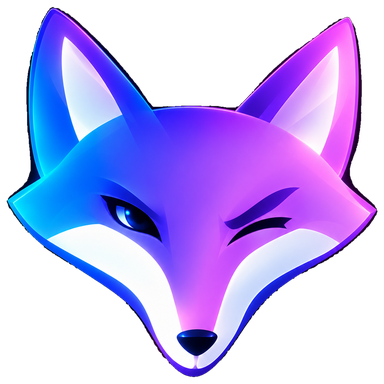

Tu tablero vive en tu proyecto.
Una carpeta, una base SQLite y un binario en Go. Las tareas se quedan en el proyecto, se leen en JSON y se miran en el navegador, sin nada que desplegar ni cuenta que mantener.
GoSQLiteJSONAPI HTTPinterfaz incluida
Mostrando tk-1
{
"id": 1,
"ref": "tk-1",
"title": "Preparar el informe trimestral",
"status": "in_progress",
"blocked": false,
"priority": 1,
"tags": ["informe"],
"children": [
{ "ref": "tk-2", "status": "open" }
]
}{
"id": 2,
"ref": "tk-2",
"title": "Revisar el tono del resumen",
"status": "open",
"blocked": false,
"priority": 3,
"parent_id": 1,
"tags": [],
"close_reason": null
}{
"id": 3,
"ref": "tk-3",
"title": "Cerrar el capítulo de ventas",
"status": "open",
"blocked": true,
"priority": 2,
"tags": ["informe"],
"blockers": [
{ "ref": "tk-2" }
]
}Tres cosas que no necesitas.
Nada que desplegar ni que dejar encendido. El tablero es un archivo dentro del proyecto.
Registro y permisos sobran. Una persona, su máquina y su carpeta.
Copiar el proyecto se lleva el tablero. Lo que no existe es una segunda copia que reconciliar.
Lo que sí hace falta es Go para compilar el binario. Node entra solo si tocas el código de la interfaz; usarla no lo necesita.
Lo que el tablero guarda.
Las piezas con las que se piensa el trabajo. Las tablas que las guardan son un detalle de la implementación.
- tarea
- Referencia visible
tk-1, título, estado, prioridad, responsable, padre y notas. - dependencia
- Qué espera a qué.
blockedse calcula en cada lectura; no se guarda. - etiqueta
- Un catálogo del proyecto con color y descripción, compartido por todas las tareas.
- comentario
- El histórico de cada tarea: decisiones, hallazgos y evidencia, con su fecha.
- ADR
- Las decisiones durables, con una exportación a texto para que Git guarde su revisión.
Los agentes leen JSON, no párrafos.
El CLI del tablero habla JSON: las tareas entran y salen como datos, los errores también, y el código de salida dice qué pasó. Las extensiones de Pi y de OpenCode convierten esas órdenes en herramientas con esquema, y el tablero entra en cada turno del agente: lo que está en curso, lo que se puede empezar y su árbol.
# el detalle: hijas, bloqueantes y comentarios
./tasks-ai show tk-1
{ "ref": "tk-1", "status": "in_progress",
"children": [ ... ], "blockers": [ ... ],
"dependents": [], "comments": [ ... ] }Dos minutos y un binario.
Compilar es el único paso que pide Go. A partir de ahí, todo lo hace el binario.
go build ./cmd/tasks-ai
./tasks-ai init
./tasks-ai create --title "Informe"
./tasks-ai serve-
Compila.
Deja el binario en la carpeta del proyecto. No necesita Node, ni una base de datos aparte.
-
Instala.
initescribe.tasks-ai/con la base, los ajustes, las instrucciones y las dos extensiones de agente. -
Trabaja.
Crea tareas por la terminal y míralas con
serveenhttp://127.0.0.1:8890. Las dos superficies escriben lo mismo.
La guía repasa cada orden, cada opción y cada mensaje de error, copiados del binario real.
Lo que no hace.
También está en la guía. Mejor saberlo antes de instalar nada.
-
Sincronizar
La base es un archivo local. Ni se sincroniza ni se comparte sola.
-
Distinguir personas
No hay cuentas ni permisos. Escucha en
127.0.0.1por omisión y supone una persona en su máquina. -
Borrar tareas
Se cierran con un motivo y siguen en el listado. Una decisión se sustituye, no se borra.
